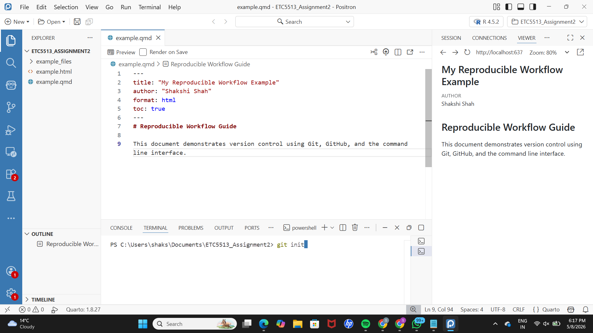
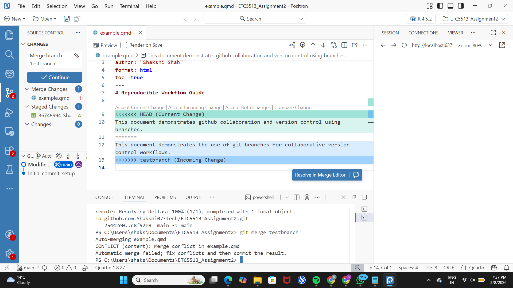
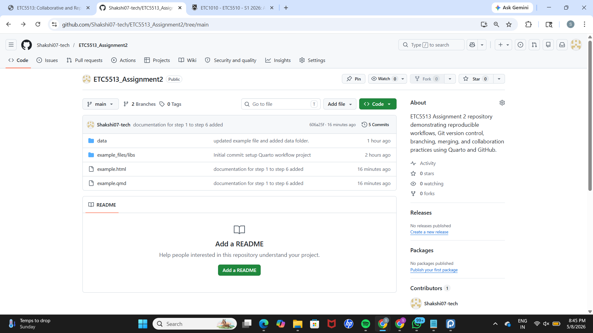
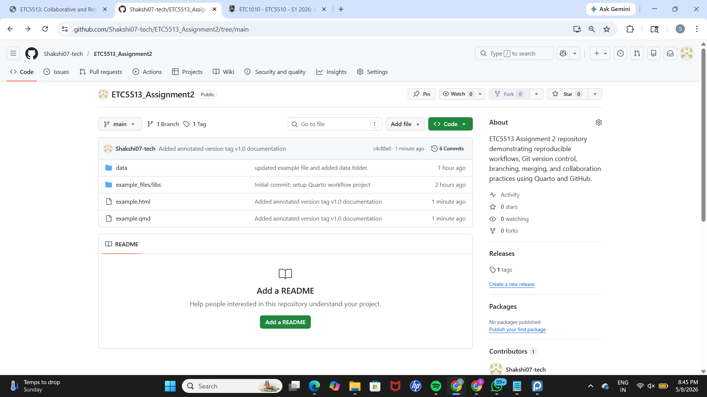
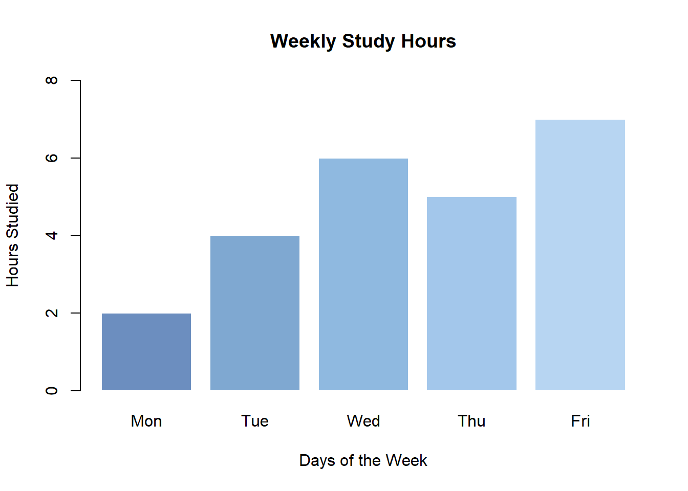

This document demonstrates github collaboration and version control using branches.
1.1 Step 1: Creating the Quarto Document
A new Positron project was created for this assignment to manage all files in one workspace. Inside this project folder, a Quarto file named example.qmd was created to write the report.
To check that everything was set up correctly, the document was rendered into an HTML file using the terminal command:
quarto render example.qmd --to html
This process converts the Quarto file into a readable HTML output and confirms that the setup is working properly. A screenshot has been included to show the successful rendering result.

Check for render document screenshot
1.2 Step 2: Initialising Git and Connecting to GitHub
Git was initialised in the project folder using:
git init
This turns the folder into a version-controlled repository, meaning Git can now track all file changes over time.
After that, all files were added and committed to create the first version of the project.
The local repository was then connected to GitHub using the following commands:
git remote add origin <repository-url>
git branch -M main
git push -u origin main
These commands link the local project to a GitHub repository and upload the initial version so it is stored online and can be accessed remotely.
1.3 Step 3: Creating and Updating a Branch
A new branch called testbranch was created using:
git checkout -b testbranch
This allows changes to be made separately from the main project without affecting the stable version on the main branch.
An update was made to the introduction section in example.qmd to demonstrate how changes can be tracked independently in a branch.
The changes were saved using a commit and then pushed to GitHub with:
git push -u origin testbranch
This ensures the new branch and its changes are also available on GitHub for tracking and collaboration.
1.4 Step 4: Amending the Previous Commit
A new folder named data was created, and the dataset from Assignment 1 was added inside it.
Instead of creating a new commit, the previous commit was updated using:
git commit --amend -m "Updated project structure and included Assignment 1 dataset in data folder"
This command replaces the most recent commit with an updated version, combining related changes into a single cleaner commit.
Since the commit history was changed, the updated version was pushed to GitHub using:
git push --force
A force push is required here because Git needs permission to overwrite the previous commit on the remote repository.
1.5 Step 5: Creating a Conflict on Main
The project was switched back to the main branch using:
git checkout main
A change was then made to the same section of example.qmd, but in a different way from the version in testbranch.
This was done intentionally to create a merge conflict situation later.
The changes were committed and pushed to GitHub.
By modifying the same part of a file differently in two branches, Git is later unable to automatically decide which version to keep, creating a conflict for demonstration.

Conflict creation screenshot
1.6 Step 6: Merging and Resolving the Conflict
The testbranch was merged into main using:
git merge testbranch
Git detected a conflict because both branches had changes in the same part of the file.
The conflict was then resolved manually by opening the file, choosing the correct final version, and removing the conflict markers added by Git.
After fixing the file, the merge was completed using:
git commit -m "Resolved merge conflict between main and testbranch by integrating both changes"
Finally, the updated project was pushed to GitHub so that the resolved version is saved remotely.
1.7 Step 7: Tagging the Project Version
An annotated tag v1.0 was created to mark an important and stable version of the project after completing major development steps like branching and merging.
Tags are useful because they help identify key milestones in the project history, making it easier to refer back to important versions later.
1.8 Step 8: Branch Cleanup
After successfully merging testbranch into main, the branch was no longer needed.
It was deleted locally and remotely to keep the repository clean and organised.
This helps avoid confusion from unused or outdated branches and keeps the project structure simple.

Branch_cleanup screenshot

Branch_cleanup after screenshot
1.9 Step 9: Commit History
The commit history of the project was viewed in a simplified format using:
git log --oneline
This shows all commits in a short and easy-to-read format, helping to quickly understand the sequence of changes made throughout the project.
A screenshot has been included to show the commit history output.
Commit list screenshot
1.10 Step 10: Final Visualization
A simple bar plot is created to demonstrate basic data visualization in Positron.
Code
study_hours <-c(2, 4, 6, 5, 7)barplot( study_hours,names.arg =c("Mon", "Tue", "Wed", "Thu", "Fri"),col =c("#6C8EBF", "#7FA8D1", "#8FB9E0", "#A3C7EB", "#B7D5F2"),border ="white",main ="Weekly Study Hours",xlab ="Days of the Week",ylab ="Hours Studied",ylim =c(0, 8))

git reset --soft HEAD~1 is a command that takes you back one step in your commit history by removing your most recent commit. However, it does not delete or undo any of your actual work.
All the changes you made in that commit stay in your files and also remain staged (ready to be committed again). This means you can safely fix something, adjust your commit, or redo it without losing any code you already wrote. I have also included a screenshot to show this process in the terminal for reference.
1.11 Conclusion
The above guide provides a comprehensive process of working on a reproducible project using Quarto, Git, and GitHub. It provides a detailed description of creating a project and managing it through versioning, commit, branch management, merges, and resolving conflicts. The guide further illustrates how a local project is linked to GitHub, versioning various iterations of work, and maintaining the integrity of the project. In essence, the entire process provides an insight into the benefits of version control in organising work, avoiding data loss, and facilitating collaborative development.